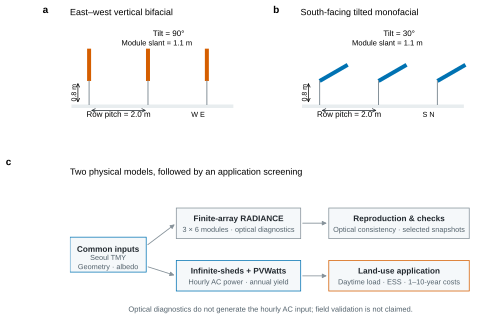
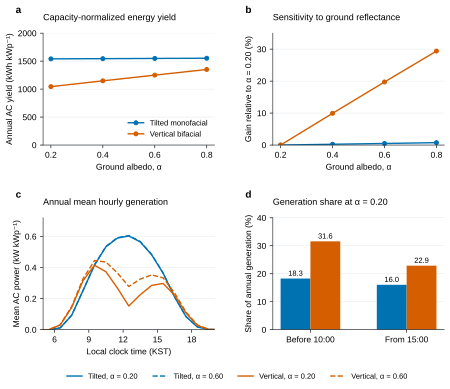
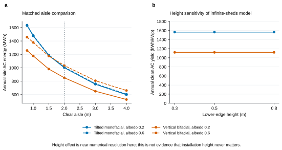
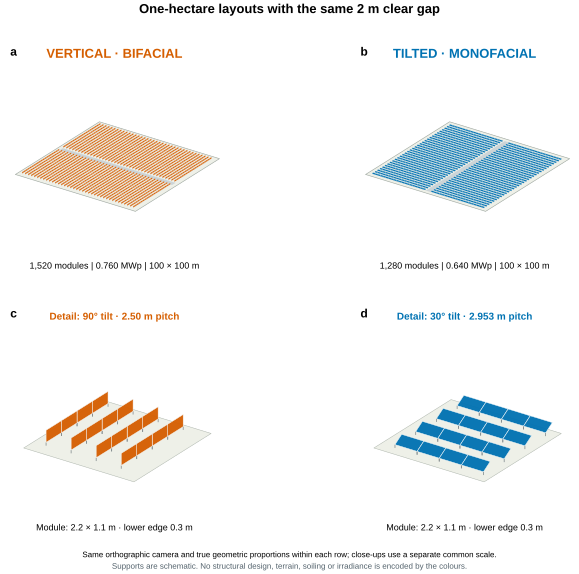
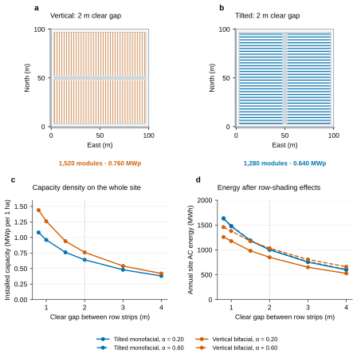
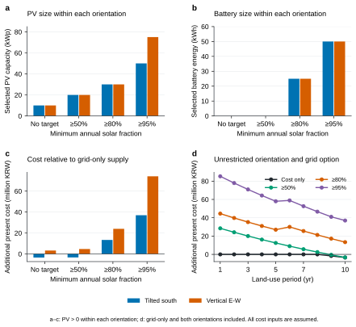

RESEARCH ARTICLE · PRELIMINARY STUDY
유휴부지 수직 양면형 태양광의
설치 밀도와 발전 생산성
1만㎡ 부지의 배치·설치 용량·면적당 발전량 비교와
시공성·자가소비·ESS 적용 조건의 검토
Vertical Bifacial Photovoltaics on Vacant Land:
Installation Density, Land Productivity and Deployment Conditions
00초록
유휴부지 수직 양면형 태양광의 활용 가능성을 설치 밀도, 면적당 발전량 및 설치·철거의 용이성이라는 관점에서 검토하였다. 서울 대표 기상년을 사용하여 수직 동서향과 남향 30° 경사형을 비교하고, 100m × 100m의 가상 부지에서 동일 열 간격 및 동일 순수 통로 폭의 배치를 각각 평가하였다. 패널 수는 경계 여유와 중앙 통로를 제외해 정수로 산정하고, 열 간격별 시간당 수율을 적용하였다. 설치 용이성은 공수·기초·장비·철거비로 평가할 후속 검증 항목이며 아직 측정하지 않았다.
동일 2m 열 간격에서는 두 배치 모두 1,880장·940kWp였다. 순수 통로 폭 1m와 가정 점유폭을 적용하면 수직형은 2,520장·1,260kWp, 경사형은 1,920장·960kWp로 수직형의 설치 용량이 31.3% 컸다. 그러나 알베도 0.20의 연간 AC 발전량은 각각 약 1,177MWh와 1,541MWh로 수직형이 23.6% 낮았다. 이는 설치 밀도와 발전 생산성을 구분해야 함을 보여준다. 주간 자가소비·ESS·비용 분석은 별도의 소규모 부하 사례로 제시하였다. 전체 결과는 가정 부지와 모델을 사용한 예비 계산이며 실제 시공·계통 수용성 검증은 아니다.
주제어유휴부지 · 수직 양면형 태양광 · 설치 밀도 · 면적당 발전량 · 설치 용이성 · 자가소비
01서론
도시 유휴부지의 태양광 활용은 단위 모듈의 발전량과 부지의 실제 이용 조건을 함께 다루는 문제다. 경사형 배열을 설치할 수 있는 면적, 열 사이의 통로, 주변 장애물, 부지 반환 시점이 달라지면 같은 정격용량의 시스템도 활용 가치가 달라질 수 있다. 본 연구의 핵심 가설은 수직형의 설치 용이성과 배치 밀도가 유휴부지 활용에 기여할 수 있다는 것이다. 동일 용량 비교에 더해 같은 1만㎡ 부지에서 확보되는 패널 수·정격용량과 연간 발전량을 비교한다. 설치 용이성은 구조 형태만으로 단정하지 않고, 공수·공기·기초·장비·철거비로 검증할 대상으로 둔다.
수직 양면형 자체는 새로운 설치 방식이 아니다. 기존 연구는 수직형의 수익성이 설계 변수와 시간대별 전력가치에 의존함을 분석하였다.[1] 인공 반사면의 크기와 위치에 따른 추가 발전량 및 경제적 가치도 이미 연구되었다.[2] 따라서 본 연구의 기여는 수직 설치의 존재를 제안하는 데 있지 않다. 유휴부지라는 이용 조건 안에서 발전 성능, 공간 지표, 부하 대응과 제한된 사용 기간의 비용을 연결하여 판단할 수 있는 비교 틀을 구성하는 데 있다. 다만 실제 부지 자료를 아직 적용하지 않았으므로 그 기여는 현재 계산 범위의 예비 검토로 한정한다.
검토 질문은 세 가지다. 첫째, 같은 부지와 통로 조건에서 수직형으로 설치할 수 있는 패널 수와 용량이 증가하는가. 둘째, 설치 밀도를 높일 때 용량당 수율 감소를 고려해도 부지 전체 발전량이 증가하는가. 셋째, 설치·철거의 공수와 비용, 시설의 전력 수요를 포함하면 유휴부지 이용 가치가 어떻게 달라지는가. 세 번째 질문의 시공성은 측정 계획으로, 자가소비·ESS는 별도의 예비 계산으로 제시한다.
여기서 “효율”은 모듈의 광전 변환효율과 구분한다. 본문은 패널 밀도(장/m²), 설치 용량 밀도(kWp/m²), 연간 AC 수율(kWh/kWp), 전체 부지 또는 반복 배열면적당 생산성(kWh/m²·년)을 구분한다. 수요 충당률과 비용은 시설 활용의 보조 지표다. 수직형의 우위나 불리함은 각 지표의 분모와 비교 조건을 명시한 뒤 해석한다.
02연구 설계와 방법
모든 기본 조건에 동일한 기상 파일과 모듈 사양을 사용하였다. 지면 반사율 4개와 배치 2개의 조합으로 기본 8개 조건을 구성하고, 후면의 전기적 기여를 제거한 단면 대조 조건을 추가하였다. 추가 계산에는 일반 민감도 50개, 간격 비교 47개, 회전 범위 36개와 높이 선별 64개 조건이 포함된다. 이 가운데 본문의 중심 비교는 고정식 수직형·경사형이다.
| 항목 | 설정 |
|---|---|
| 기상·위치 | 서울 대표 지점 37.56°N, 126.98°E; PVGIS ERA5 TMY 8,760시간 |
| 비교 배치 | 남향 30° 경사형 / 동서향 90° 수직형 |
| 모듈 | 500Wp, 2.2 × 1.1m, 양면계수 0.80; 특정 제품의 실측 사양 아님 |
| 기본 배열 | 광학 모델 3열 × 6장; 열 간격 2.0m, 하단 지상고 0.8m |
| 지면 | 균일 확산반사면, 알베도 0.20 / 0.40 / 0.60 / 0.80 |
| 전력 모델 | 무한열 전후면 일사 + Faiman 온도 + PVWatts DC·AC |
| 공통 손실 | DC 손실 8%, 인버터 효율 96%, DC/AC 정격비 1.2 |
| 보조 적용 분석 | 주간 합성 부하 100kWh/일; 1~10년; 자가소비 우선·잉여 판매 |

{kind=link}
2.1 광학 계산과 시간별 전력 계산
RADIANCE로 유한 3 × 6 배열의 전후면 누적 일사와 선택 시각 광학 진단을 계산하였다. 별도로 pvlib의 infinite-sheds 모델에서 시간별 전후면 일사를 계산하고 온도·전력 모델을 연결하였다.[3][4] 두 모델의 배열 경계와 가정이 다르므로 광학 진단을 곧바로 유한 배열의 연간 AC 발전량으로 해석하지 않았다. 기본 수율은 후자의 정격용량 정규화 결과다.
Yarea = EAC / Aperiodic(2)
G는 일사강도, φ는 양면계수, P는 전력, Δt는 1시간, E는 적산 전력량이다. Aperiodic은 열 간격과 열 방향 모듈 폭에 따른 반복 배열면적이며 실제 부지면적과 다르다. 통로·이격·기초·장애물·ESS 공간은 포함하지 않았다. 그림 3의 기존 간격 선별은 수직형 중심이며 경사형은 2.5m 간격의 참조점이다. 추가한 1만㎡ 사례(그림 4–5)는 두 배치 모두를 같은 열 간격 목록과 같은 순수 통로 폭 목록으로 다시 계산하였다. 이는 제한된 후보 탐색이며 각도·높이·다단 배열까지 최적화한 비교는 아니다.
2.2 부하·저장장치와 이용 기간 비용
적용 가능성 검토에는 하루 평균 100kWh의 합성 주간 부하를 사용하였다. 현지 시각 08시 이상 18시 미만의 시간대 가중치는 1, 나머지는 0.1로 두고 연간 36,500kWh로 정규화하였다. 평일·휴일 차이는 없다. 균등형·저녁형 부하를 포함한 전체 계산은 설계 759개, 설계·운영연도 7,590개이며 비용 민감도 조합은 182,160개다.
태양광은 0·10·20·30·40·50·75·100kWp, ESS는 공칭 0·25·50·100·200kWh를 후보로 두었다. PCS 출력은 공칭 에너지의 2시간 또는 4시간 방전 정격으로 설정하였다. SOC 10~90%, 왕복 효율 90%, PCS 출력의 0.2% 보조전력을 적용하였다. 태양광 직접 공급, 잉여 충전, 잉여 판매의 순서로 운전하고 부족분은 ESS 방전과 계통 구매로 공급하였다. 계통 충전과 시간대별 가격 최적화는 포함하지 않았다. 저장 운전의 목적에 따라 평가가 달라진다는 점에서 SAM의 구분을 참고했으나 SAM을 직접 실행한 결과는 아니다.[5]
fsolar,y = (EPV→load,y + EESS→load,y) / Eload,y(3)
식 (3)의 SOC는 최저 SOC 위의 사용 가능한 저장 에너지다. 초기 사용 가능 에너지는 0이며 연말 저장량은 이월하였다. PV는 연 0.5% 열화, ESS는 연 2%와 등가완전사이클당 0.004%의 용량 손실을 가정하고 SOH 70% 미만이면 다음 운영연도 시작에 교체하였다. 이 수명 모형은 제품 실측으로 검증하지 않았다. 목표 충당률은 기간 중 모든 연도에 적용한다.
+ ΣyCrepl,y/(1+r)y−1 + (Cend − Vres)/(1+r)T(4)
NPC는 총 현재비용이며 초기비 C0, 연말 구매·유지관리 비용, 판매 수입, 연초 교체비, 종료 비용과 잔존가치를 포함한다. 실질 할인율 r은 5%다. 기준 구매·판매단가는 각각 180·80원/kWh이며 실제 계약에서 가져온 값이 아니다. PV 초기비는 140만원/kWp와 고정비 300만원, ESS는 40만원/kWh·20만원/kW와 고정비 300만원이다. 알베도 0.60은 반복면적에 1만원/m²의 지면 처리비를 추가하였다. 비용의 에너지·출력 항목 분리는 ATB의 구성을 참고했으며 미국 가격을 한국 견적으로 대입하지 않았다.[6]
PV·ESS 유지관리는 각 초기 설비비의 연 1%·1.5%, 반사면 유지관리는 연 2%로 두었다. 종료 시 PV 10만원/kWp와 ESS 2만원/kWh를 가정했다. 기준안의 잔존가치는 0이다. 비용 0.7·1.0·1.3배, 구매·판매단가 4조합, 가정 잔여 정액가치의 회수 0·50%를 민감도로 계산했다. 실제 임대료, 계통 증설, 기본·최대수요 요금, 세금·REC·보조금은 포함하지 않았다. 전체 입력은 보충자료에 제공한다.
03발전 성능과 반사율 민감도
기준 알베도 0.20에서 수직형의 연간 수율은 1,044.1kWh/kWp, 경사형은 1,611.0kWh/kWp였다. 같은 정격용량에서 수직형이 35.2% 낮았다. 수직형의 알베도를 0.60으로 높이면 1,250.1kWh/kWp로 증가했지만 기준 경사형보다 22.4% 낮았다. 현재 조건에서 반사면 개선은 수직형의 손실을 일부 줄였으나 연간 발전량 순위를 바꾸지 못했다.

{kind=link}
알베도 0.20에서 0.60으로의 수율 증가율은 수직형 19.73%, 경사형 7.37%였다. 상대적 증가율과 절대 연간 수율을 분리하면, 수직형이 지면 반사 조건에 더 민감한 동시에 경사형보다 총 발전량은 적다는 결과를 함께 설명할 수 있다. 균일한 알베도는 실제 반사도료의 오염·노화·부분 처리와 같지 않으므로 이 증가율을 제품 성능으로 읽을 수 없다.
수직형은 기준 조건에서 10시 이전 발전 비중이 31.6%, 15시 이후가 22.9%였고 경사형은 각각 18.3%, 16.4%였다. 이 비중의 차이는 특정 시간대의 절대 발전량이나 수익성 우위를 자동으로 보장하지 않는다. 그림 2c의 절대 출력과 실제 부하·요금을 함께 평가해야 한다.
| 배치 / 알베도 | 연간 수율 (kWh/kWp) | 반복면적 생산성 (kWh/m²·년) | 연 36,500kWh 생산에 필요한 용량(kWp) |
|---|---|---|---|
| 남향 30° · α=0.20 | 1,611.0 | 182.2 | 22.7 |
| 남향 30° · α=0.60 | 1,729.8 | 195.7 | 21.1 |
| 수직 동서향 · α=0.20 | 1,044.1 | 118.1 | 35.0 |
| 수직 동서향 · α=0.60 | 1,250.1 | 141.4 | 29.2 |
마지막 열은 연간 생산량 합계가 소비량 합계와 같아지는 용량이다. 시간별 수요 충당, 정전 자립 또는 최저 발전일 공급을 보장하지 않는다.
041만㎡의 설치 밀도와 부지 생산성
4.1 설치 밀도와 용량당 수율의 상충관계
같은 부지에서 확보하는 발전량은 설치 용량 밀도와 용량당 수율의 곱이다. 수직형의 열 간격을 넓히면 이웃 열의 차폐가 줄면서 용량당 수율이 증가했으나, 설치 밀도가 감소하여 반복면적당 생산성은 낮아졌다. 더 많은 패널을 배치할 수 있는지와 그 패널이 만드는 총 발전량을 별도 지표로 확인해야 한다.
Ysite = DPV × Yspec(5)

{kind=link}
4.2 가상 부지의 경계·통로와 패널 수
총면적 10,000m²를 100m × 100m 평탄한 정방형 부지로 가정하였다. 사방 3m 여유와 열을 가로지르는 폭 4m 중앙 통로를 제외하면 배치 영역은 94m × 90m, 8,460m²다. 열 방향으로 45m 구간 두 개를 만들고 각 구간에 길이 2.2m의 500Wp 모듈 20장과 모듈 사이 0.01m 틈을 배치하여 한 열에 40장을 설치하였다. 배열 방향에 맞춰 중앙 통로도 회전시켰다. 실제 부지 형태·경사·장애물은 반영하지 않았다.
열의 점유폭 w는 max(0.50m, 1.10m × cos θ)로 가정하였다. 0.50m는 지지대 주변을 위한 가정 폭이며 제품·기초 설계값이 아니다. 이때 수직형의 점유폭은 0.50m, 경사형은 약 0.953m다. 열 간격 p는 열의 동일 기준점 사이 거리, 순수 통로 폭 g는 p−w다. 경계 3m, 중앙 통로 4m 및 열 사이 통로는 연구용 가정으로, 법정 이격이나 소방 기준을 뜻하지 않는다.
N = 40 Nrow, Psite = 0.5 N (kWp)(6)
비교 A는 두 배치에 공통 열 간격 1.5·2·2.5·3·4·5·6m를 적용하였다. 비교 B는 공통 순수 통로 폭 0.8·1·1.5·2·3·4m를 적용하고 p=w+g로 각 배치의 간격을 정하였다. 알베도 0.20·0.60을 포함한 52개 조건에서 동일한 시간별 일사·전력 모델을 실행하였다. 유한 배치의 정수 패널 수에 무한열 수율을 곱했으므로 경계와 중앙 통로의 광학 효과를 직접 계산한 결과는 아니다.[3]

{kind=link}

{kind=link}
| 비교 조건 | 배치 | 열 간격 (m) | 패널 수 (장) | 용량 (kWp) | 연 발전량 (MWh) | 전체 부지 생산성 (kWh/m²·년) |
|---|---|---|---|---|---|---|
| 열 간격 2m | 수직형 | 2.000 | 1,880 | 940 | 981 | 98.1 |
| 열 간격 2m | 경사형 | 2.000 | 1,880 | 940 | 1,514 | 151.4 |
| 순수 통로 1m | 수직형 | 1.500 | 2,520 | 1,260 | 1,177 | 117.7 |
| 순수 통로 1m | 경사형 | 1.953 | 1,920 | 960 | 1,541 | 154.1 |
알베도 0.20, 500Wp 모듈 기준. 열 사이 통로와 경계는 가정값이다. ESS·변압기·인버터실 등의 전용 부지는 추가 차감하지 않았다.
열 간격 2m에서는 두 배치 모두 1,880장·940kWp였다. 따라서 같은 간격과 같은 모듈에서 수직이라는 이유만으로 패널 밀도가 높아지는 것은 아니다. 반면 순수 통로 1m를 유지하면 수직형은 1.500m 간격으로 63열·2,520장·1,260kWp, 경사형은 약 1.953m 간격으로 48열·1,920장·960kWp가 배치되었다. 이 가정에서 수직형의 설치 용량은 31.3% 컸다.
동일 통로 1m에서 알베도 0.20의 연간 발전량은 수직형 약 1,177MWh, 경사형 약 1,541MWh로, 설치 밀도의 증가에도 수직형이 23.6% 낮았다. 알베도 0.60을 양쪽에 적용하면 각각 약 1,379MWh와 1,651MWh다. 밀도 이득이 수율 차이를 완전히 상쇄하지 못한 사례다. 이 결과는 선택한 모듈 방향·높이·점유폭과 기상년의 결과이며, 다른 부지나 다단 배열의 순위를 확정하지 않는다.
4.3 설치 용이성을 검증할 지표
설치 용이성은 본 연구의 핵심 검증 과제다. 같은 안전·내구 요구를 만족하는 설계끼리 설치 공수와 공기, 기초·토공, 장비 접근, 철거·복구를 비교해야 한다. 설치 용량이 다르면 총량과 kWp당 값을 함께 기록하고, 에너지 생산까지 반영하려면 수명기간 발전량당 시공·복구 비용도 비교한다. 현재는 시공 자료가 없어 수직형의 공수나 비용 절감률을 제시하지 않았다.
| 평가 항목 | 비교 지표 | 현재 상태 |
|---|---|---|
| 설치 작업 | 총 인·시간, 인·시간/kWp, 작업일 | 미측정 |
| 기초·토공 | 기초 수량, 굴착·콘크리트량, 필요 장비 | 구조·지반 설계 필요 |
| 접근·배치 | 통로 폭, 패널 수, 통로·설비 공간 제외 용량 | 가정 부지 계산 |
| 철거·복구 | 인·시간, 비용, 재사용 가능한 자재 비율 | 미측정 |
단순한 형상이나 패널 수만으로 시공성이 검증되는 것은 아니다.
05자가소비·ESS와 한시 이용 비용
이 절은 기존 하루 평균 100kWh 시설과 PV 0~100kWp 후보의 별도 사례다. 앞 절의 1만㎡ 전체 설비에 대한 ESS 용량·비용 결과가 아니다. 순수 통로 1m의 수직형 1,260kWp는 기준 연간 1,177MWh를 생산하여 이 합성 부하 36.5MWh의 약 32배다. 실제 시설 부하와 판매·계통 수용 용량을 확보한 뒤 1만㎡ 사례의 자가소비·출력제한·ESS를 다시 평가해야 한다.
발전 성능 검토를 시설 운영에 연결하기 위해 배치를 수직형 또는 경사형으로 제한한 뒤 각 배치 안에서 비용이 가장 낮은 PV·ESS 후보를 선택하였다. 이 비교는 수직형을 설치하려는 경우 필요한 규모와 비용을 보여준다. 별도로 배치 선택을 자유롭게 하고 계통 전력만 사용하는 안도 포함하여 투자 경제성을 평가하였다. 두 비교의 선택 범위를 혼동하지 않는다.

{kind=link}
| 목표 | 배치 | PV (kWp) | ESS (kWh / kW) | 최저 연간 충당률 | 계통 구매만 대비 현재비용(만원) |
|---|---|---|---|---|---|
| 50% | 경사형 | 20 | 0 / 0 | 67.1% | 334 절감 |
| 50% | 수직형 | 20 | 0 / 0 | 58.8% | 469 추가 |
| 80% | 경사형 | 30 | 25 / 6.25 | 84.6% | 1,337 추가 |
| 80% | 수직형 | 30 | 25 / 6.25 | 81.2% | 2,399 추가 |
| 95% | 경사형 | 50 | 50 / 12.5 | 95.6% | 3,698 추가 |
| 95% | 수직형 | 75 | 50 / 12.5 | 96.4% | 7,417 추가 |
두 배치의 기본 PV 단가는 동일하게 가정했다. 선택된 알베도와 초기비 등 세부 값은 배치별 비교 CSV에 제공한다. 용량 후보와 운전 규칙이 제한된 예비 결과다.
매년 80% 충당을 요구한 수직형 후보는 알베도 0.60, PV 30kWp와 ESS 25kWh/6.25kW였으며 기간 중 최저 충당률은 81.2%였다. 같은 목표의 경사형도 PV 30kWp와 ESS 25kWh/6.25kW가 선택되었으나 최저 충당률은 84.6%이고 총 현재비용은 더 낮았다. 95% 목표에서 수직형은 75kWp, 경사형은 50kWp가 선택되었으며 ESS는 두 배치 모두 50kWh/12.5kW였다. 이 사례에서는 수직형이 ESS를 줄인다는 주장을 뒷받침하지 않는다.
배치와 설치 여부를 자유롭게 선택하면, 기준 비용 시나리오에서 1~8년은 계통 전력만 구매하는 안이, 9~10년은 ESS 없는 PV 10kWp가 최소비용 후보였다. 10년의 PV 10kWp는 경사형·알베도 0.60이며 계통만 구매하는 기준보다 약 344만원 절감했다. 높은 충당률의 비용은 별도다. 예를 들어 80%를 만족하는 경사형+ESS 안은 무저장 PV 75kWp 안보다 약 1,156만원 저렴했지만 계통 단독 기준보다 약 1,337만원 비쌌다.
이 결과에서 ESS의 유용성은 “태양광 충당 목표를 더 적은 비용으로 달성하는가”와 “투자 자체가 비용을 절감하는가”로 나뉜다. 계통 연결 시설에서는 ESS 0도 유효한 운영안이다. 시간대별 요금·최대수요 저감·정전 예비 전력은 현재 평가에 포함되지 않았으므로 일반적인 ESS 수익성의 결론으로 확대하지 않는다.
06논의와 검증의 한계
6.1 유휴부지에서 수직형을 선택하는 근거
수직형의 설치를 정당화하려면 연간 수율의 손실을 감수할 만한 다른 조건이 실제로 존재하는지 확인해야 한다. 후보 조건은 부지 형태에 맞는 배치 가능성, 사용 시간대와 발전의 일치, 유지관리 및 설치·철거의 차이 등이다. 본 연구는 발전·부하·가정 비용과 1만㎡ 가상 부지의 정수 패널 배치를 계산하였다. 토지의 다른 이용과의 공존, 통행 편의, 조립·이전 우위는 측정한 결과가 아니며 향후 검증할 가설이다.
6.2 재현성 확인과 물리 검증의 구분
기존 계산 조건을 유지한 Windows 실행에서 기본 수치 검사 13개와 회전 81개·높이 9개 선택 시각 진단이 통과했다. 저장된 기준 결과와의 최대 차이는 pvlib에서 수치 정밀도 수준, 기본 RADIANCE 누적 일사에서 약 0.369%였다. 이러한 값은 실행 재현성을 확인하는 지표이며 현장 예측 오차나 신뢰구간이 아니다. 유한 배열과 무한열의 차이도 실측 오차와 구분한다.
ESS 계산의 시간별 에너지 수지 최대 잔차는 약 1.6 × 10−14kWh이며 관련 자동 검사 13개가 통과했다. 저장된 결과의 5,760개 후보 선택도 비용 순위를 재점검했다. 이 검증은 에너지 회계와 후보 선택의 일관성을 확인하며 최적 운전 증명이나 배터리 수명 검증은 아니다.
6.3 해석을 제한하는 입력과 모델
PVGIS ERA5 TMY의 정시 표기와 일사 시점에 관한 공식 설명에 따라 기존 프로토콜의 30분 보정을 유지하였다.[7] 그러나 사용한 자료의 낮 시간 일사 성분 수지 평균 절대 잔차는 24.59W/m²로 시각을 보정하지 않은 진단과 차이가 남아 있다. 오전·오후 출력과 부하 매칭의 정밀한 해석은 이 문제를 조사한 뒤 재평가해야 한다.
단일 TMY, 균일 반사율, 가정 모듈, 무한열 전력 모델과 동일한 연간 부하의 반복은 연도 간 변동과 현장 차폐를 충분히 반영하지 못한다. 모듈 전후면의 오염 누적·강우·세척은 공통 DC 손실 8%와 별도로 모델링하지 않았다. 반사면 노화·재도장, 구조물 음영, 전기 불일치, 실제 스트링·인버터 조합도 남아 있다. 태양광 양 배치의 설치비가 같다는 가정, 단순 잔존가치, 부지 임대·복구 및 계통 비용의 누락은 경제성 순위를 바꿀 수 있다.
6.4 NVIDIA Warp 오염모델의 시험 단계
동일한 모듈 기하로 NVIDIA Warp의 GPU 입자 추적 시험을 수행하였다. 일정 풍속·침강속도와 충돌 시 완전부착을 가정하여 30회·1,500만 입자의 전후면·지면 충돌 및 이탈을 계수했다. 독립 삼각형 교차 계산 2,560개 광선과 일치하고 입자 수지가 보존되었다. 다만 기류·난류·재비산·강우·세척과 광투과율 보정이 없는 시험이므로 본문의 연간 발전량·비용에 오염 손실로 적용하지 않았다. 보충 방법: Warp 시험의 가정·결과·코드에 실행 범위와 한계를 제공한다.
6.5 논문 본 실험으로 확장할 검증
- 같은 실제 부지에서의 비교. 경계·통로·장애물·기초와 ESS 공간을 반영하고 두 배치의 각도·간격·용량을 같은 탐색 조건에서 비교한다.
- 시공성과 실제 점유폭. 구조·기초 설계에서 지지대 점유폭을 확정하고 설치·철거 공수, 장비 및 비용을 양쪽에서 측정한다. 0.50m 최소 점유폭 가정에 대한 민감도도 필요하다.
- 시간별 출력의 독립 검증. 같은 기하의 독립 모델 또는 공개·현장 실측과 대조하고 기상 시각, 광선수·센서수·배열 크기의 수렴성을 확인한다.
- 반사면과 운영 자료. 반사율·오염·세척·노화를 관측하고 시설의 1년 이상 부하, 실제 요금·잉여 판매 계약과 설치·철거 견적을 적용한다.
- 다년·한시 이용 조건. 여러 기상연도와 부지 조기 반환을 평가하고 철거·이전·재사용의 실측 비용을 포함한다. 확률 근거가 없는 항목은 범위 민감도로 제시한다.
회전형의 구동·풍하중 및 구조 안전성은 이 원고의 발전 성능 결론과 별도의 검토 대상이다. 수치 계산에서 높은 수율이 나왔다는 이유로 시공 가능성이나 안전성이 검증되었다고 표현하지 않는다.
07결론
서울 대표 기상년과 공통 모듈·간격 조건에서 동서향 수직 양면형 태양광은 남향 30° 경사형보다 낮은 연간 수율을 보였다. 지면 반사율을 높였을 때의 상대적 증가율은 수직형에서 더 컸지만, 알베도 0.60의 수직형도 알베도 0.20의 경사형보다 발전량이 적었다. 설치 간격을 넓히는 전략은 용량당 수율을 높이는 동시에 반복면적당 생산성을 낮추었다.
1만㎡ 가상 부지에서 순수 통로 폭 1m를 유지하면 수직형의 설치 용량은 31.3% 증가했지만, 기준 연간 발전량은 경사형보다 23.6% 낮았다. 동일 2m 열 간격에서는 설치 용량 차이가 없었다. 따라서 설치 밀도의 이점은 확보할 통로와 실제 점유폭을 명시해 평가해야 하며, 설치 용이성은 공수·기초·철거 자료로 검증해야 한다. 보조 비용 분석에서는 수직형이 ESS 용량을 줄인다는 결과가 나타나지 않았으며, ESS 없는 선택도 중요한 비교안이었다. 현재 원고는 이 판단 구조와 계산 근거를 제시한 예비 연구다. 실제 부지·부하와 독립 검증을 보완해야 수직형의 적용 조건에 관한 일반화된 결론을 도출할 수 있다.
08데이터·코드와 보충자료
본문의 정량 그림은 저장된 계산 CSV에서 새로 생성하였다. 그림의 연결선은 계산 조건 간 경향을 보여주며 측정 자료나 통계적 적합선을 뜻하지 않는다. 반복 관측 표본이 없으므로 유의확률·신뢰구간·오차막대를 만들지 않았다. 원자료 표, 시간별 출력, 비용 가정, 배치별 재선택 결과 및 그림을 생성한 자료를 아래에서 내려받을 수 있다.
데이터 이용 가능성: 이 페이지에는 본문과 그림의 기반 자료를 첨부했다. 완전한 태양광 실행 소스·기상자료·환경·진단 로그는 별도로 보존한 로컬 재현 묶음에 있으며 이 웹페이지에 공개 저장소로 등록한 것은 아니다. 코드 이용 가능성: 보충자료에 ESS 계산·검사와 그림 생성 코드를 포함하였다. 제출 전 원본 태양광 전체 코드의 영구 저장소와 배포 조건을 확정해야 한다.
저자·소속·연구비·이해관계 정보는 제공되지 않아 임의로 기재하지 않았다. 원고 구성, 코드 작성과 자료 정리에는 생성형 AI 보조를 사용하였다. AI를 저자로 기재하지 않았으며 최종 저자의 과학적 검토와 연구 책임 확정은 별도로 필요하다.
그림은 색각 구분을 고려한 파랑·주황 중심 배색, a–d 패널, 통일된 서체와 벡터 출력을 사용했다. Nature의 그림 작성 안내를 표현 방식의 참고로 사용했으며 Nature 게재·승인 또는 투고 규격의 완전한 충족을 뜻하지 않는다.
09참고문헌
- Baricchio, M., Korevaar, M., Babal, P. & Ziar, H. Modelling of bifacial photovoltaic farms to evaluate the profitability of East/West vertical configuration. Solar Energy 272, 112457 (2024). 원문
- Lewis, M. R., Ovaitt, S., McDanold, B., Deline, C. & Hinzer, K. Artificial ground reflector size and position effects on energy yield and economics of single-axis-tracked bifacial photovoltaics. Progress in Photovoltaics: Research and Applications 32, 675–686 (2024). 원문
- pvlib python. Infinite-sheds bifacial irradiance model: get_irradiance. 공식 소프트웨어 문서. 본 계산 버전 0.15.2. 원문
- bifacial_radiance. Documentation. RADIANCE 기반 양면형 광학 계산의 공식 문서. 본 계산 버전 0.5.3. 원문
- System Advisor Model. Behind-the-meter battery dispatch. 공식 저장 운전 문서. 방법 구분의 참고이며 이번 계산에서 SAM을 직접 실행하지 않음. 원문
- National Renewable Energy Laboratory. 2024 Annual Technology Baseline: Commercial Battery Storage. 비용 구성의 방법론 참고. 원문
- European Commission, Joint Research Centre. PVGIS 5 User Manual. ERA5 TMY와 일사 시각 규약의 공식 설명. 원문
선행연구 검토는 핵심 비교 자료를 중심으로 수행한 초기 검토다. 연구 문제의 독창성을 확정하는 체계적 문헌고찰과 투고 전 인용 범위의 확대가 남아 있다.